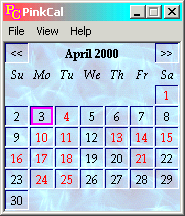
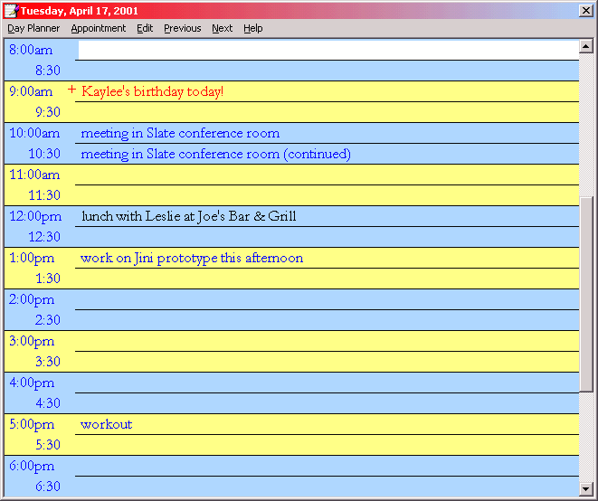
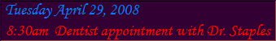

Views
| The Main Window
Clicking on the calendar face on a date will access a day planner for that day.  The main window is so small you can place it in a corner on the screen and forget it (until it is needed again). Fonts, Colors and Sounds are user selectable. The size of the window is determined by the font selected. Select a large font for a large window, or a small font for a small window. |
The Day Planner
To setup
an entry to automatically repeat, select that entry in the day planner
then select "Repeats" from the Command menu.
The repeat dialog is customized
to fit the selected entry.  |
|
Reminder  Left click the reminder text to close; Right click to snooze. To move the reminder, click-and-drag the title. Week-at-a-Glance View The Week-at-a-Glance view lets you quickly review your schedule. The view can display 1, 2 or 4 weeks of appointments at a time. View a sample Week-at-a-Glance View. Calendar Year View
Quick Check
Next Appointment |
|
{kind=link}
{kind=link}
{kind=link}
{kind=link}